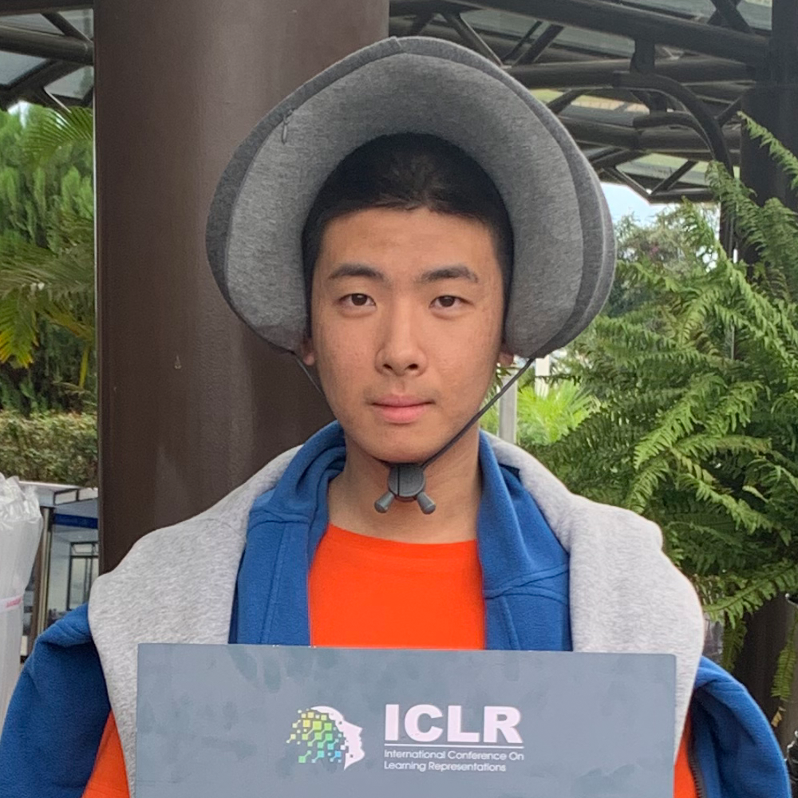
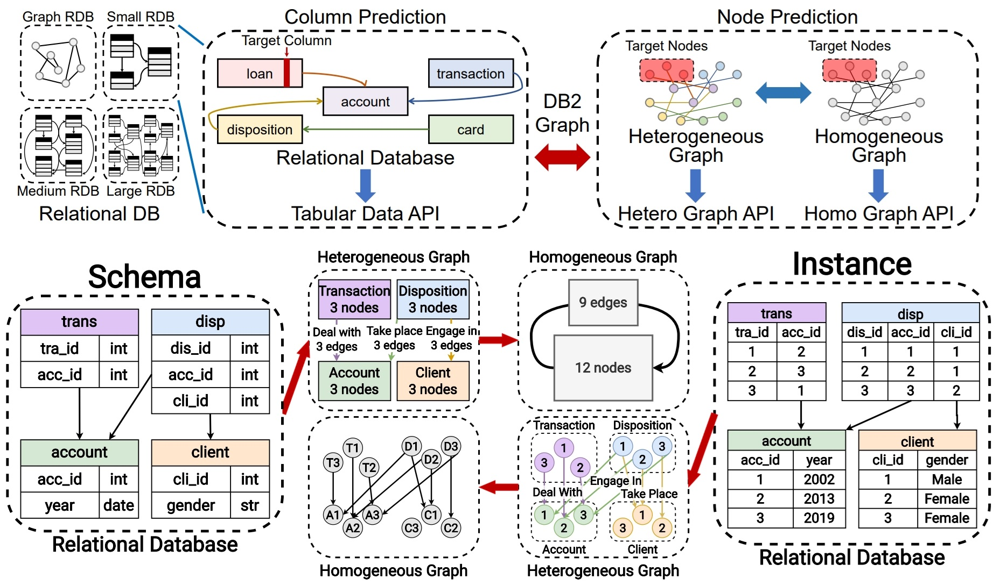
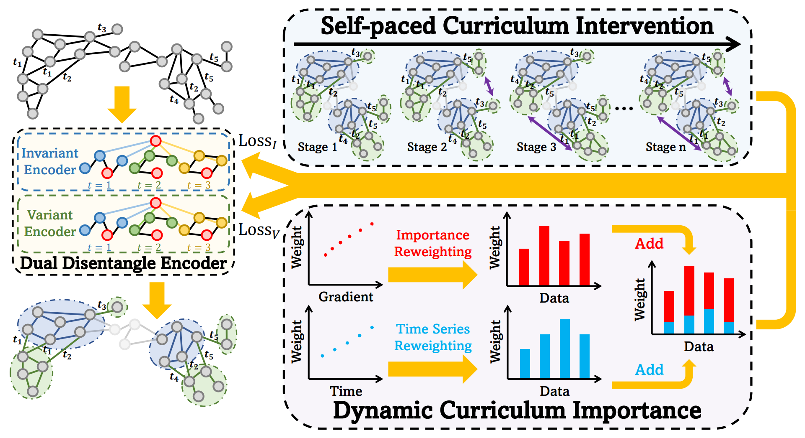
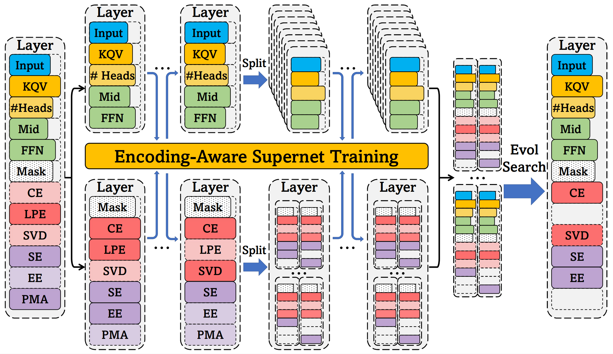

|
Zizhao Zhang 张紫昭
I am a second-year Ph.D. student at Tsinghua University, advised by Prof. Wenwu Zhu. I graduated from the Department of Computer Science and Technology at Tsinghua University in 2022. I have been very fortunate to work with Prof. Jiaxuan You as a summer intern in 2023.
Email /
CV /
Google Scholar /
Github
|

|
Research
My research interests primarily focus on enhancing the efficiency and applicability of machine learning applications, especially on graphs.
|
|

|
RDBench: ML Benchmark for Relational Databases
Zizhao Zhang*,
Yi Yang*,
Lutong Zou*,
He Wen*,
Tao Feng,
Jiaxuan You
[paper]
arXiv, 2023
|
|

|
Curriculum Dynamic Graph Invariant Learning Under Distribution Shift
Zizhao Zhang,
Haoyang Li,
Zeyang Zhang,
Ziwei Zhang,
Yuan Meng,
Xin Wang,
Wenwu Zhu
[paper]
In submission, 2023
|
|

|
AutoGT: Automated Graph Transformer Architecture Search
Zizhao Zhang,
Xin Wang,
Chaoyu Guan,
Ziwei Zhang,
Haoyang Li,
Wenwu Zhu
[paper]
[code]
[slides]
[poster]
[video]
ICLR, 2023 (Notable Top 5%)
|
- Excellent Graduate, Tsinghua University, 2022
- Outstanding Graduate, Department of Computer Science and Technology, Tsinghua University, 2022
- Comprehensive Excellence Scholarship, Tsinghua University, 2020
- Outstanding Volunteer Scholarship, Tsinghua University, 2019
- Academic Excellence Scholarship, Tsinghua University, 2019
Template adapted from Jon Barron.
Last updated December 2023.
|
|
{kind=link}